| correctname | n_registros | IUCN | elev_min | elev_max |
|---|---|---|---|---|
| Lithocarpus corneus | 1 | 794 | 794 | |
| Quercus alvordiana | 1 | 1260 | 1260 | |
| Quercus breedloveana | 1 | DD | 1505 | 1505 |
| Quercus cerris | 1 | LC | 1860 | 1860 |
| Quercus copeyensis | 1 | 2103 | 2103 | |
| Quercus ellipsoidalis | 1 | LC | 1250 | 1250 |
| Quercus ganderi | 1 | 321 | 321 | |
| Quercus ilex | 1 | LC | 1110 | 1110 |
| Quercus laevis | 1 | LC | 1569 | 1569 |
| Quercus melissae | 1 | DD | 1537 | 1537 |
| Quercus montana | 1 | LC | 789 | 789 |
| Quercus morehus | 1 | 833 | 833 | |
| Quercus nigra | 1 | LC | 3435 | 3435 |
| Quercus petraea | 1 | LC | 2166 | 2166 |
| Quercus serrata | 1 | LC | 2197 | 2197 |
| Quercus tardifolia | 1 | DD | 1602 | 1602 |
| Lithocarpus korthalsii | 2 | 1467 | 2178 | |
| Quercus buckleyi | 2 | LC | 926 | 1273 |
| Quercus geminata | 2 | LC | 1740 | 1740 |
| Quercus sanchezcolinii | 2 | 2591 | 2683 | |
| Quercus suber | 2 | LC | 1764 | 2245 |
| Quercus tomentella | 2 | 367 | 580 | |
| Quercus kelloggii | 3 | LC | 1650 | 1669 |
| Quercus robur | 3 | LC | 1443 | 1596 |
| Quercus virginiana | 3 | LC | 190 | 1627 |
| Lithocarpus elegans | 4 | 2276 | 2782 | |
| Quercus carmenensis | 4 | EN | 1451 | 2535 |
| Quercus charcasana | 4 | 2389 | 2403 | |
| Quercus douglasii | 4 | LC | 2319 | 2686 |
| Quercus cualensis | 5 | EN | 1735 | 2036 |
| Quercus ocoteaefolia | 5 | 1175 | 2954 | |
| Quercus toxicodendrifolia | 5 | DD | 1411 | 1997 |
| Quercus aerea | 6 | DD | 1657 | 2363 |
| Quercus centenaria | 7 | DD | 1372 | 2102 |
| Quercus mulleri | 7 | CR | 1325 | 2632 |
| Quercus mexiae | 8 | DD | 1061 | 2425 |
| Quercus robusta | 8 | DD | 757 | 2021 |
| Quercus glaucophylla | 10 | 20 | 1869 | |
| Quercus meavei | 10 | VU | 1380 | 2281 |
| Quercus tuitensis | 10 | VU | 868 | 1858 |
| Quercus pennivenia | 11 | 1275 | 2636 | |
| Quercus coahuilensis | 12 | DD | 1234 | 2637 |
| Quercus deliquescens | 12 | DD | 1122 | 2131 |
| Quercus basaseachicensis | 13 | 471 | 2560 | |
| Quercus flocculenta | 13 | EN | 544 | 3393 |
| Quercus nixoniana | 13 | EN | 1262 | 2534 |
| Quercus sinuata | 13 | LC | 739 | 2358 |
| Quercus engelmannii | 14 | EN | 220 | 2329 |
| Quercus huicholensis | 15 | 1481 | 2412 | |
| Quercus runcinatifolia | 16 | EN | 426 | 2978 |
| Quercus delgadoana | 17 | EN | 1374 | 1948 |
| Quercus macdougallii | 17 | EN | 1160 | 3134 |
| Quercus gulielmi-treleasei | 18 | VU | 1498 | 2167 |
| Quercus porphyrogenita | 18 | DD | 403 | 2287 |
| Quercus iltisii | 21 | NT | 575 | 2009 |
| Quercus miquihuanensis | 21 | EN | 828 | 3090 |
| Quercus oocarpa | 23 | 89 | 2607 | |
| Quercus acutidens | 25 | 86 | 1281 | |
| Quercus ajoensis | 25 | VU | 374 | 2498 |
| Quercus hirtifolia | 26 | EN | 1451 | 2307 |
| Quercus galeanensis | 27 | EN | 224 | 2658 |
| Quercus furfuracea | 28 | VU | 418 | 2177 |
| Quercus knoblochii | 30 | 766 | 2337 | |
| Quercus ariifolia | 32 | NT | 300 | 2903 |
| Quercus acherdophylla | 35 | DD | 142 | 3760 |
| Quercus barrancana | 38 | DD | 603 | 2389 |
| Quercus perpallida | 43 | DD | 376 | 2164 |
| Quercus purulhana | 44 | NT | 27 | 2317 |
| Quercus opaca | 46 | DD | 189 | 3494 |
| Quercus wislizeni | 46 | LC | 101 | 2441 |
| Quercus sororia | 49 | LC | 20 | 2511 |
| Quercus berberidifolia | 51 | LC | 119 | 1636 |
| Quercus paxtalensis | 52 | DD | 154 | 2772 |
| Quercus muehlenbergii | 55 | LC | 441 | 2345 |
| Quercus praeco | 56 | LC | 20 | 2653 |
| Quercus xylina | 56 | NT | 113 | 2671 |
| Quercus laurifolia | 57 | LC | 34 | 3142 |
| Quercus hintoniorum | 61 | 461 | 3692 | |
| Quercus crispifolia | 62 | NT | 71 | 2786 |
| Quercus acatenangensis | 63 | LC | 348 | 3017 |
| Quercus pinnativenulosa | 63 | NT | 290 | 2443 |
| Quercus mohriana | 67 | LC | 489 | 2108 |
| Quercus rubramenta | 70 | VU | 598 | 3516 |
| Quercus cornelius-mulleri | 71 | LC | 463 | 2135 |
| Quercus vicentensis | 72 | VU | 240 | 2900 |
| Quercus hintonii | 73 | 751 | 2684 | |
| Quercus dumosa | 77 | EN | 9 | 2103 |
| Quercus cortesii | 85 | NT | 59 | 2282 |
| Quercus tinkhamii | 91 | DD | 1303 | 2651 |
| Quercus devia | 92 | EN | 37 | 2341 |
| Quercus hypoxantha | 98 | LC | 241 | 3692 |
| Quercus planipocula | 99 | LC | 23 | 2497 |
| Quercus radiata | 102 | EN | 95 | 2860 |
| Quercus gambelii | 103 | LC | 804 | 3082 |
| Quercus palmeri | 107 | NT | 112 | 2419 |
| Quercus coffeicolor | 108 | DD | 30 | 2559 |
| Quercus depressa | 108 | LC | 350 | 3509 |
| Quercus benthamii | 109 | NT | 19 | 3022 |
| Quercus seemannii | 109 | 118 | 2680 | |
| Quercus insignis | 115 | EN | 4 | 5601 |
| Quercus diversifolia | 117 | EN | 31 | 3653 |
| Quercus tarahumara | 121 | LC | 759 | 2624 |
| Quercus invaginata | 122 | LC | 133 | 2997 |
| Quercus convallata | 133 | LC | 83 | 2937 |
| Quercus uxoris | 133 | LC | 129 | 2970 |
| Quercus calophylla | 137 | LC | 8 | 5601 |
| Quercus grahamii | 140 | DD | 276 | 3066 |
| Quercus vaseyana | 144 | LC | 151 | 2778 |
| Quercus saltillensis | 146 | NT | 717 | 3692 |
| Quercus intricata | 147 | LC | 181 | 3563 |
| Quercus repanda | 148 | LC | 7 | 3759 |
| Quercus subspathulata | 163 | LC | 0 | 2893 |
| Quercus macvaughii | 166 | 1202 | 2775 | |
| Quercus pungens | 172 | LC | 12 | 3114 |
| Quercus brandegeei | 179 | EN | -5 | 1807 |
| Quercus chrysolepis | 194 | LC | 259 | 2989 |
| Quercus gravesii | 196 | LC | 258 | 2925 |
| Quercus fulva | 198 | LC | 179 | 3108 |
| Quercus aristata | 200 | LC | 0 | 2906 |
| Quercus sebifera | 201 | LC | 13 | 2904 |
| Quercus skinneri | 201 | NT | 2 | 3911 |
| Quercus lancifolia | 210 | LC | 1 | 5601 |
| Quercus martinezii | 217 | LC | 4 | 3199 |
| Quercus crispipilis | 219 | NT | 53 | 2913 |
| Quercus depressipes | 220 | LC | 1297 | 3220 |
| Quercus fusiformis | 224 | LC | 8 | 2427 |
| Quercus mcvaughii | 232 | NT | 737 | 2673 |
| Quercus rysophylla | 236 | NT | 12 | 2496 |
| Quercus urbani | 240 | LC | 17 | 2849 |
| Quercus albocincta | 244 | LC | 9 | 2241 |
| Quercus salicifolia | 246 | LC | 6 | 3206 |
| Quercus laceyi | 247 | LC | 89 | 3188 |
| Quercus toumeyi | 247 | DD | 402 | 2991 |
| Quercus glaucescens | 250 | LC | 8 | 2515 |
| Quercus conzattii | 251 | LC | 154 | 2849 |
| Quercus striatula | 256 | LC | 450 | 3690 |
| Quercus liebmannii | 257 | LC | 75 | 2873 |
| Quercus segoviensis | 258 | LC | 77 | 3120 |
| Quercus canbyi | 267 | LC | 133 | 3692 |
| Quercus germana | 273 | LC | 15 | 5601 |
| Quercus pringlei | 287 | LC | 78 | 3462 |
| Quercus corrugata | 291 | LC | 19 | 2898 |
| Quercus confertifolia | 295 | LC | 3 | 4259 |
| Quercus cedrosensis | 297 | VU | 4 | 1608 |
| Quercus xalapensis | 305 | LC | 93 | 3439 |
| Quercus frutex | 306 | LC | 320 | 4073 |
| Quercus glabrescens | 327 | LC | 89 | 5609 |
| Quercus sapotifolia | 336 | LC | 3 | 2622 |
| Quercus turbinella | 385 | LC | 13 | 2480 |
| Quercus durifolia | 426 | NT | 551 | 3494 |
| Quercus sartorii | 442 | NT | 1 | 4120 |
| Quercus greggii | 445 | LC | 17 | 3692 |
| Quercus peninsularis | 445 | NT | 26 | 2802 |
| Quercus viminea | 468 | LC | 115 | 2769 |
| Quercus tuberculata | 476 | LC | 17 | 2613 |
| Quercus microphylla | 490 | LC | 7 | 3694 |
| Quercus deserticola | 491 | LC | 51 | 4259 |
| Quercus affinis | 498 | LC | 55 | 3692 |
| Quercus potosina | 498 | LC | 1028 | 3108 |
| Quercus agrifolia | 564 | LC | 16 | 2700 |
| Quercus emoryi | 600 | LC | 459 | 2970 |
| Quercus scytophylla | 607 | LC | 21 | 2984 |
| Quercus oleoides | 620 | NT | -9 | 2544 |
| Quercus hypoleucoides | 635 | LC | 220 | 2570 |
| Quercus grisea | 641 | LC | 491 | 2920 |
| Quercus resinosa | 658 | LC | 11 | 4250 |
| Quercus elliptica | 688 | LC | -5 | 3020 |
| Quercus glaucoides | 688 | LC | 10 | 3612 |
| Quercus oblongifolia | 704 | LC | 56 | 2742 |
| Quercus jonesii | 724 | LC | 370 | 3000 |
| Quercus chihuahuensis | 774 | LC | 23 | 3285 |
| Quercus polymorpha | 779 | LC | 42 | 2984 |
| Quercus mexicana | 866 | LC | 48 | 3692 |
| Quercus crassipes | 885 | LC | 20 | 4120 |
| Quercus peduncularis | 981 | LC | 7 | 2984 |
| Quercus eduardi | 1083 | LC | 28 | 3188 |
| Quercus sideroxyla | 1097 | LC | 23 | 3563 |
| Quercus arizonica | 1105 | LC | 240 | 2992 |
| Quercus acutifolia | 1128 | VU | 41 | 3588 |
| Quercus magnoliifolia | 1247 | LC | 17 | 2893 |
| Quercus laeta | 1472 | LC | 11 | 3539 |
| Quercus crassifolia | 1756 | LC | 28 | 4114 |
| Quercus laurina | 1806 | LC | 9 | 5609 |
| Quercus obtusata | 1911 | LC | 12 | 4259 |
| Quercus castanea | 2286 | LC | 7 | 4259 |
| Quercus rugosa | 2594 | LC | 28 | 5600 |
4 Resultados
4.1 Datos espaciales
La base de datos compuesta con los registros de encinos en México contiene 47586 observaciones únicas, representando a 186 especies. Falta decir cuantos encinos de cada seccion
4.2 Evaluación de sesgo de muestreo/escala
- Representación de la heterogeneidad de las provincias biogeográficas por escala
Las Figuras Figura 4.1 y Figura 4.2 muestran la representación de las provincias biogeográficas de México en las distintas escalas espaciales elegidas. En la Figura Figura 4.1 se presenta el número total de cuadros por provincia en cada escala, mientras que la Figura Figura 4.2 muestra el número de cuadros que contienen registros de especies.
En ambas figuras, se observa una variación en la cantidad de cuadros por provincia y por escala. Algunas provincias, como el Eje Neovolcánico y la Sierra Madre del Sur, presentan consistentemente un mayor número de cuadros en comparación con otras regiones. En las escalas más finas (e.g., 0.135°), se observa un mayor número de cuadros en general, mientras que en escalas menos detalladas (e.g., 0.45°), el número de cuadros disminuye. Esta tendencia es consistente tanto para los cuadros totales como para los cuadros con registros.
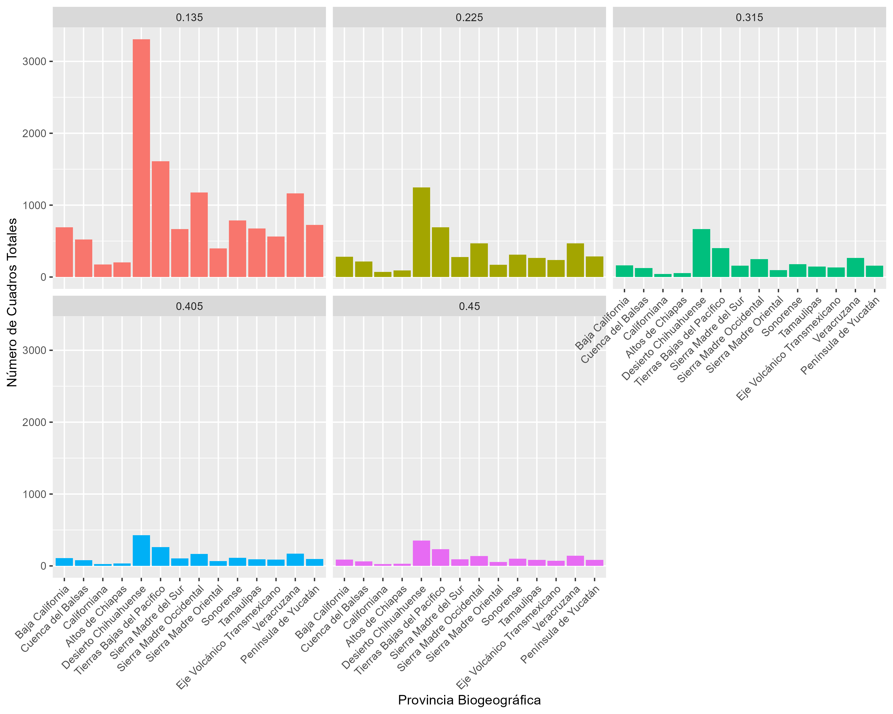

Figura 4.1 y Figura 4.2 . Muestran el conteo de píxeles por provincia biogeográfica. En la Figura 4.1 se presenta el número total de píxeles en cada provincia, sin considerar si contienen registros o no, mientras que en la Figura 4.2 se muestra únicamente los píxeles que contienen registros de especies.
- Curvas de rarefacción
Las curvas de rarefacción acumulativa por provincia biogeográfica y por escala espacial muestran

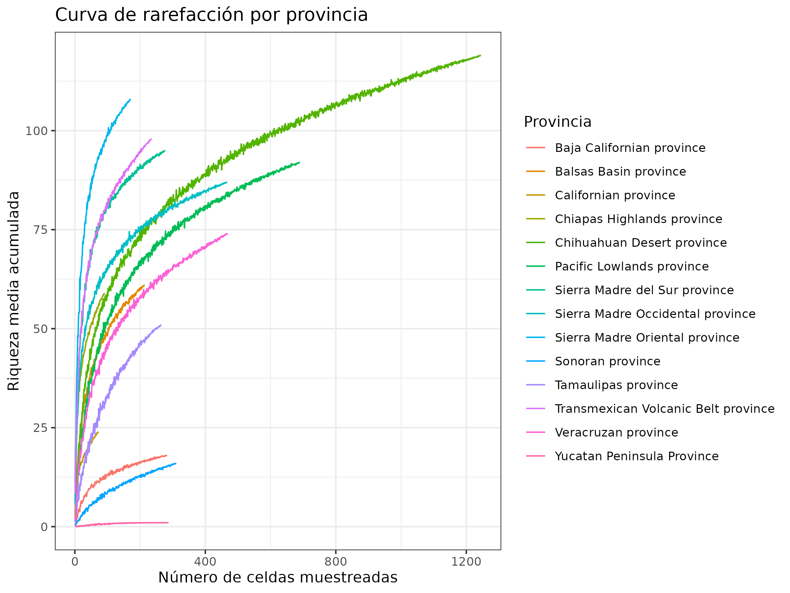
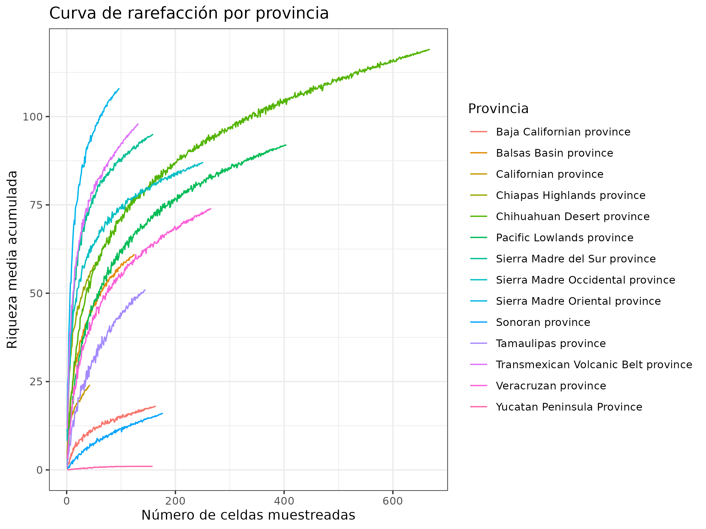
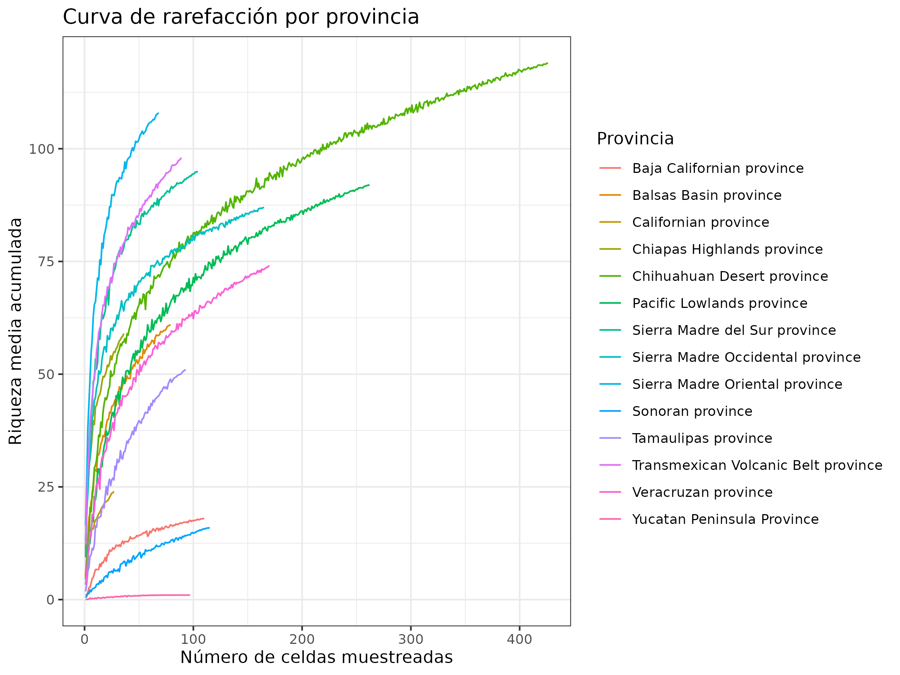

Figura 4.3 a Figura 4.7 . Curvas de rarefacción por provincia biogeográfica y por escala.
- Relación registros vs riqueza
La curva de acumulación de riqueza de especies mostró una relación positiva y asintótica con el número de registros (1). Ambas curvas muestran un incremento rápido en el número de especies únicas al comienzo del muestreo, seguido de una desaceleración progresiva conforme se acumulan más registros. Este comportamiento indica que los primeros registros aportan muchas especies nuevas, pero a medida que se continúa el muestreo, la probabilidad de registrar especies adicionales disminuye.
Las líneas de muestreos aleatorizados y del muestreo original varian relativamente poco, lo que sugiere que la estimación de la riqueza de especies no depende del orden de los registros, lo cual refuerza su validez. Por otra parte, a partir de aproximadamente 20,000 registros, tanto la curva azul como la nube de líneas negras comienzan a estabilizarse formando una asíntota, lo que sugiere que se ha muestreado una fracción considerable de la riqueza total potencial.
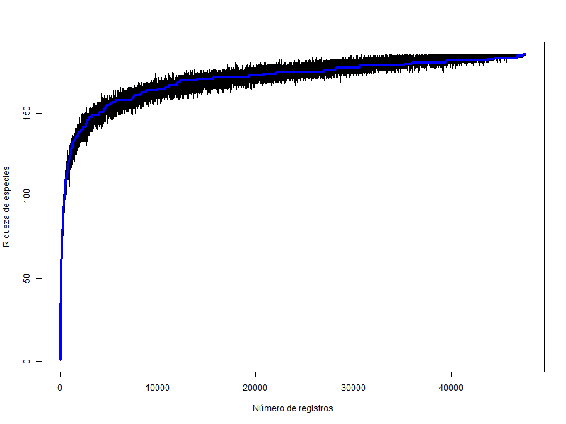
- La figura muestra la relación entre número de registros y riqueza de especies, la línea negra muestra el muestreo aleatorio en cada iteración y la azul, el orden original aleatorizado.
4.3 Árbol filogenético
Como se puede observar en la siguiente tabla, entre el árbol filogénetico de Hipp et al. (2020) y la base de datos de encinos, se tienen 87 especies en común, con un total de 40319 registros.
| correctname | n_registros | IUCN | elev_min | elev_max |
|---|---|---|---|---|
| Quercus tomentella | 2 | 367 | 580 | |
| Quercus kelloggii | 3 | LC | 1650 | 1669 |
| Quercus sinuata | 13 | LC | 739 | 2358 |
| Quercus engelmannii | 14 | EN | 220 | 2329 |
| Quercus delgadoana | 17 | EN | 1374 | 1948 |
| Quercus iltisii | 21 | NT | 575 | 2009 |
| Quercus ajoensis | 25 | VU | 374 | 2498 |
| Quercus purulhana | 44 | NT | 27 | 2317 |
| Quercus wislizeni | 46 | LC | 101 | 2441 |
| Quercus berberidifolia | 51 | LC | 119 | 1636 |
| Quercus muehlenbergii | 55 | LC | 441 | 2345 |
| Quercus crispifolia | 62 | NT | 71 | 2786 |
| Quercus pinnativenulosa | 63 | NT | 290 | 2443 |
| Quercus mohriana | 67 | LC | 489 | 2108 |
| Quercus cornelius-mulleri | 71 | LC | 463 | 2135 |
| Quercus dumosa | 82 | EN | 9 | 2103 |
| Quercus cortesii | 85 | NT | 59 | 2282 |
| Quercus planipocula | 99 | LC | 23 | 2497 |
| Quercus radiata | 102 | EN | 95 | 2860 |
| Quercus gambelii | 103 | LC | 804 | 3082 |
| Quercus palmeri | 107 | NT | 112 | 2419 |
| Quercus benthamii | 109 | NT | 19 | 3022 |
| Quercus insignis | 115 | EN | 4 | 5601 |
| Quercus diversifolia | 117 | EN | 31 | 3653 |
| Quercus uxoris | 133 | LC | 129 | 2970 |
| Quercus calophylla | 137 | LC | 8 | 5601 |
| Quercus grahamii | 140 | DD | 276 | 3066 |
| Quercus vaseyana | 144 | LC | 151 | 2778 |
| Quercus subspathulata | 163 | LC | 0 | 2893 |
| Quercus pungens | 174 | LC | 12 | 3114 |
| Quercus brandegeei | 179 | EN | -5 | 1807 |
| Quercus gravesii | 196 | LC | 258 | 2925 |
| Quercus fulva | 198 | LC | 179 | 3108 |
| Quercus aristata | 200 | LC | 0 | 2906 |
| Quercus chrysolepis | 200 | LC | 259 | 2989 |
| Quercus lancifolia | 210 | LC | 1 | 5601 |
| Quercus martinezii | 217 | LC | 4 | 3199 |
| Quercus depressipes | 220 | LC | 1297 | 3220 |
| Quercus fusiformis | 224 | LC | 8 | 2427 |
| Quercus mcvaughii | 232 | NT | 737 | 2673 |
| Quercus laceyi | 247 | LC | 89 | 3188 |
| Quercus toumeyi | 247 | DD | 402 | 2991 |
| Quercus glaucescens | 250 | LC | 8 | 2515 |
| Quercus conzattii | 251 | LC | 154 | 2849 |
| Quercus striatula | 256 | LC | 450 | 3690 |
| Quercus segoviensis | 258 | LC | 77 | 3120 |
| Quercus canbyi | 267 | LC | 133 | 3692 |
| Quercus germana | 273 | LC | 15 | 5601 |
| Quercus corrugata | 291 | LC | 19 | 2898 |
| Quercus cedrosensis | 297 | VU | 4 | 1608 |
| Quercus glabrescens | 327 | LC | 89 | 5609 |
| Quercus sapotifolia | 336 | LC | 3 | 2622 |
| Quercus turbinella | 385 | LC | 13 | 2480 |
| Quercus durifolia | 426 | NT | 551 | 3494 |
| Quercus sartorii | 442 | NT | 1 | 4120 |
| Quercus greggii | 445 | LC | 17 | 3692 |
| Quercus deserticola | 491 | LC | 51 | 4259 |
| Quercus viminea | 493 | LC | 115 | 2769 |
| Quercus affinis | 498 | LC | 55 | 3692 |
| Quercus potosina | 498 | LC | 1028 | 3108 |
| Quercus agrifolia | 564 | LC | 16 | 2700 |
| Quercus emoryi | 599 | LC | 580 | 2970 |
| Quercus scytophylla | 607 | LC | 21 | 2984 |
| Quercus oleoides | 620 | NT | -9 | 2544 |
| Quercus hypoleucoides | 634 | LC | 220 | 2606 |
| Quercus grisea | 643 | LC | 491 | 2920 |
| Quercus resinosa | 658 | LC | 11 | 4250 |
| Quercus elliptica | 688 | LC | -5 | 3020 |
| Quercus glaucoides | 688 | LC | 10 | 3612 |
| Quercus oblongifolia | 706 | LC | 56 | 2742 |
| Quercus jonesii | 724 | LC | 370 | 3000 |
| Quercus chihuahuensis | 774 | LC | 23 | 3285 |
| Quercus polymorpha | 779 | LC | 42 | 2984 |
| Quercus mexicana | 866 | LC | 48 | 3692 |
| Quercus crassipes | 885 | LC | 20 | 4120 |
| Quercus peduncularis | 981 | LC | 7 | 2984 |
| Quercus eduardi | 1083 | LC | 28 | 3188 |
| Quercus sideroxyla | 1097 | LC | 23 | 3563 |
| Quercus arizonica | 1105 | LC | 240 | 2992 |
| Quercus acutifolia | 1128 | VU | 41 | 3588 |
| Quercus magnoliifolia | 1247 | LC | 17 | 2893 |
| Quercus laeta | 1472 | LC | 11 | 3539 |
| Quercus crassifolia | 1756 | LC | 28 | 4114 |
| Quercus laurina | 1806 | LC | 9 | 5609 |
| Quercus obtusata | 1911 | LC | 12 | 4259 |
| Quercus castanea | 2286 | LC | 7 | 4259 |
| Quercus rugosa | 2594 | LC | 28 | 5600 |
4.4 Índices de biodiversidad
La distribución espacial de la riqueza, endemismo ponderado y diversidad filogénetica presentan un patrón heterogéneo en todo México. La escala influye en la inferencia de estas tendencias, ya que se puede observar que a escalas más detalladas, la distinción de estos sitios es difusa. Al contrario de las escalas más gruesas, donde al haber más generalización, estos sitios se vuelven más visibles.
- Riqueza general
Según la escala, se pueden identificar diversos sitios de alta riqueza de especies. En el caso de la escala 0.135°, los sitios de alta riqueza se presentan al sur de Sinaloa en la Sierra Madre Occidental (SMOcc), gran parte de la Sierra Madre Oriental(SMOr), en los estados de Nuevo León, Tamaulipas y San Luis Potosí. De igual forma, hay sitios de alta riqueza en el sobrelape de la SMOr y el Eje Neovolcánico Transversal.
Mas bien habria que explicar como esta forma: The first one was Orizaba, located in the northern portion of the SMS in the state of Veracruz, which concentrated the highest spatial diversity (SR = 1450; WE = 390; PD = 40350; WPE < 6250); the second was Sierra Juárez, in northern Oaxaca (SR = 650; WE = 130; PD = 24000; WPE = 2400); and the third one was Cerro Teotepec-Filo de Caballos, located in the central portion of the Sierra Sur of Guerrero (SR = 650; WE = 130; PD =24000; WPE = 2400).


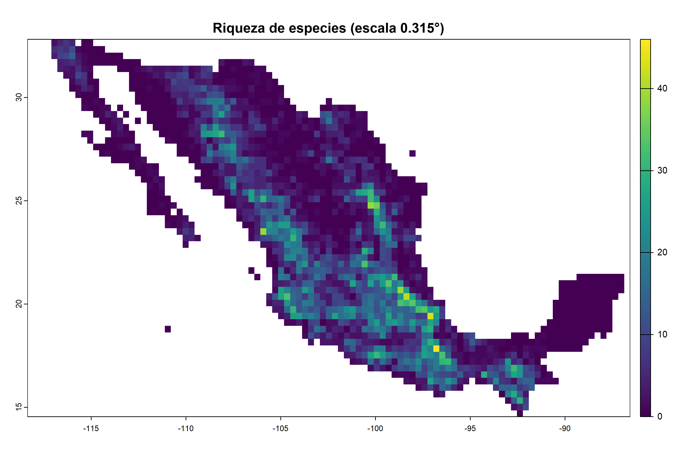

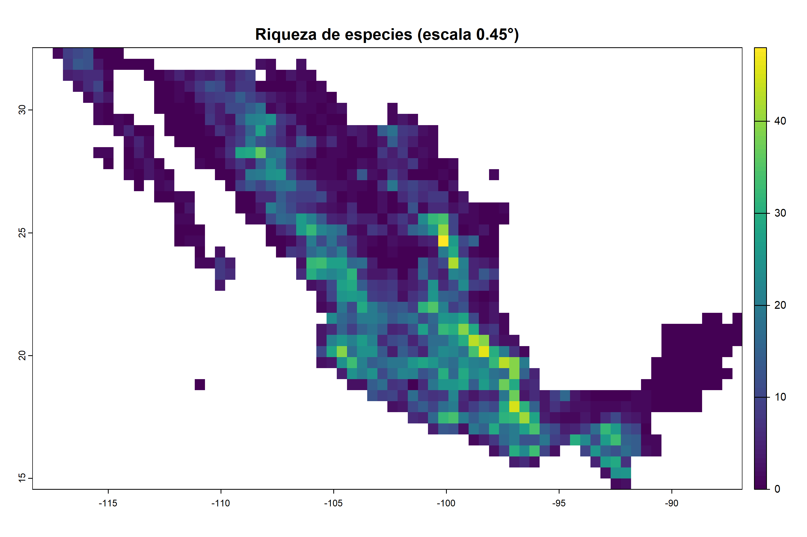
Figura 4.9 a Figura 4.13 . Riqueza de especies de la base de datos con 186 especies en total para cada pixel de las distintas escalas.
- Endemismo ponderado general

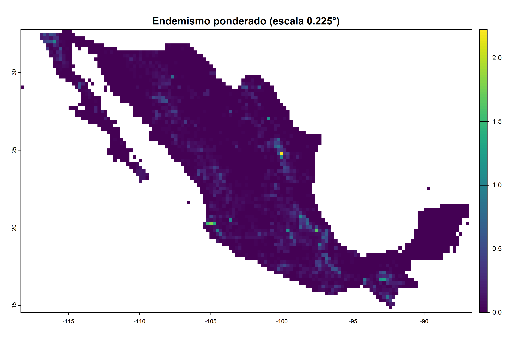

Figura 4.14 a Figura 4.18 . Endemismo ponderado de la base de datos con 186 especies en total para cada pixel de las distintas escalas.
- Diversidad filogénetica

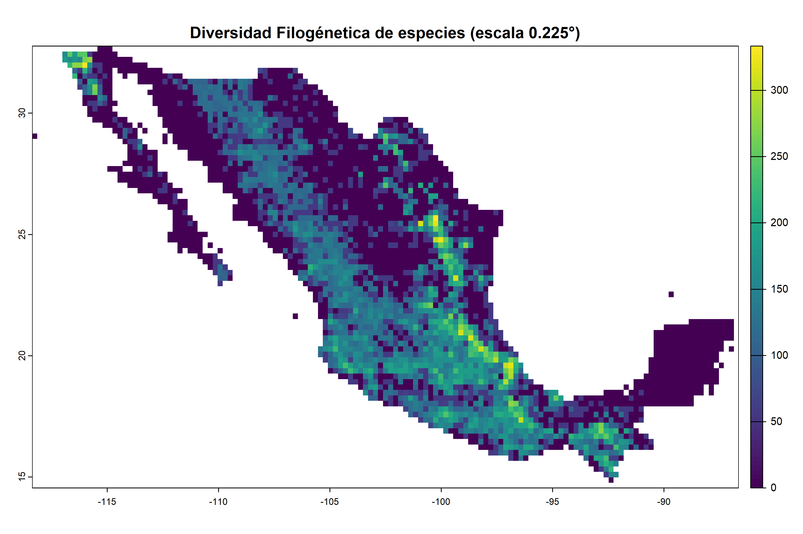
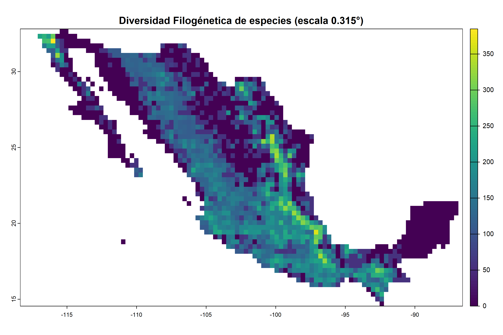
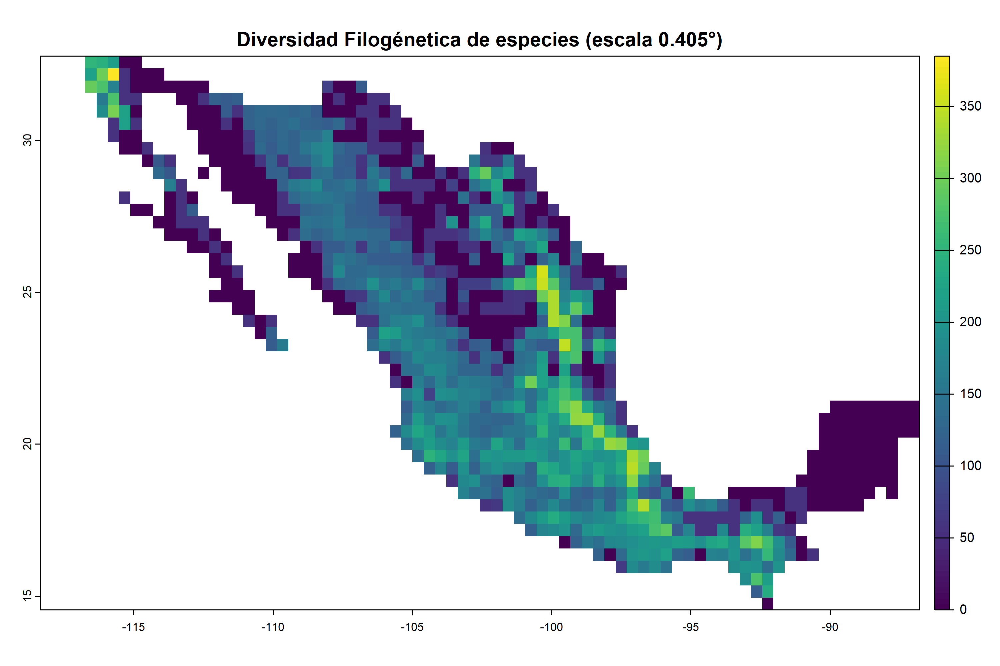

Figura 4.19 a Figura 4.23 . Diversidad filogénetica para cada pixel de las distintas escalas.
4.Riqueza de especies de las especies compartidas entre la base de datos y el árbol filogénetico


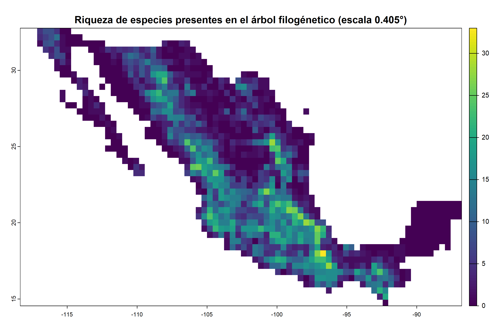
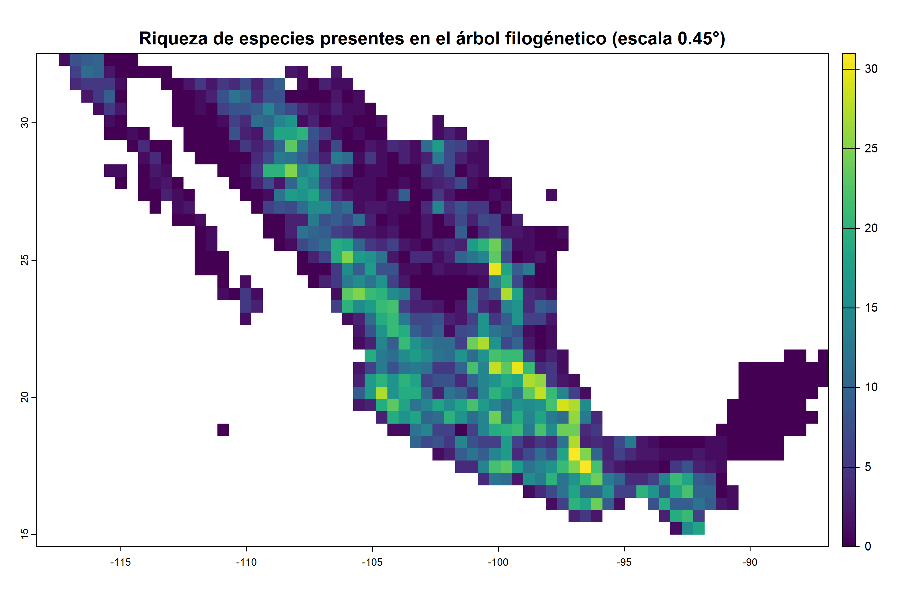
Figura 4.24 a Figura 4.28 . Riqueza de especies para cada pixel de las distintas escalas, solo tomando en cuenta las especies en común entre la base de datos y el árbol filogénetico.
- Endemismo ponderado de las especies compartidas entre la base de datos y el árbol filogénetico


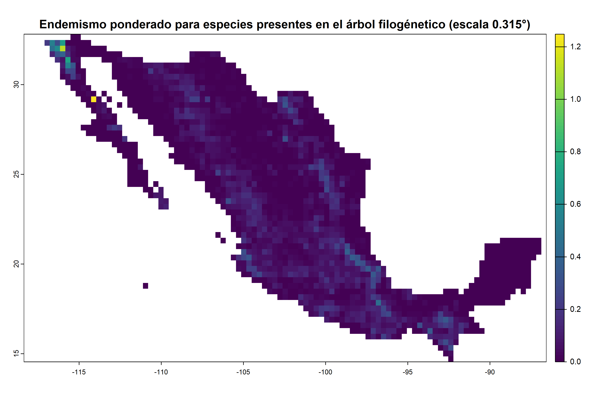

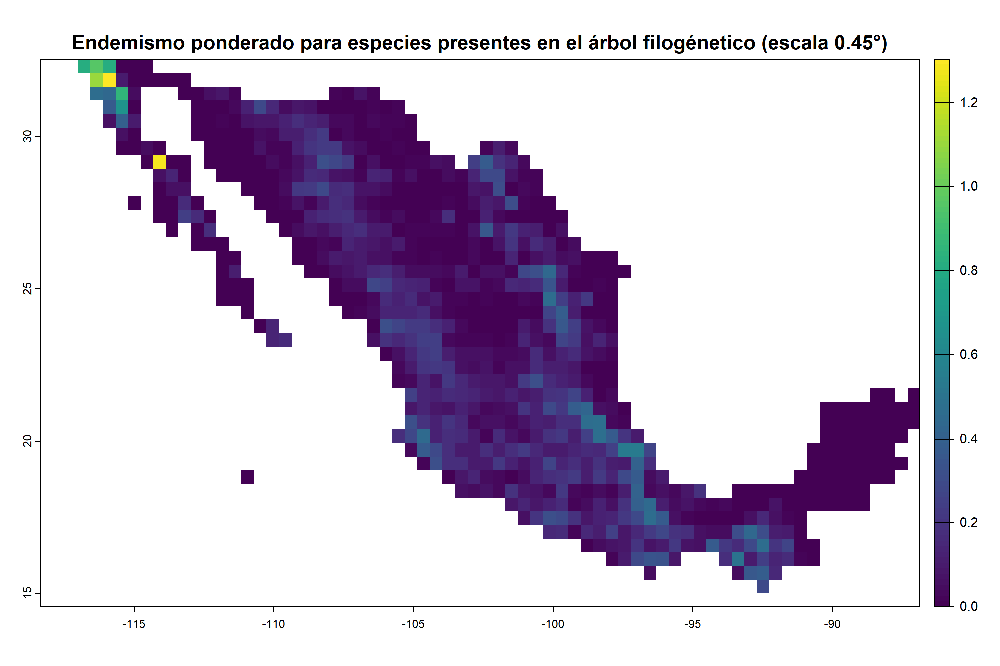
Figura 4.29 a Figura 4.33 . Endemismo ponderado para cada pixel de las distintas escalas, solo tomando en cuenta las especies en común entre la base de datos y el árbol filogénetico.
Hipp, A. L., Manos, P. S., Hahn, M., Avishai, M., Bodénès, C., Cavender-Bares, J., Crowl, A. A., Deng, M., Denk, T., Fitz-Gibbon, S., Gailing, O., González-Elizondo, M. S., González-Rodríguez, A., Grimm, G. W., Jiang, X.-L., Kremer, A., Lesur, I., McVay, J. D., Plomion, C., … Valencia-Avalos, S. (2020). Genomic landscape of the global oak phylogeny. New Phytologist, 226(4), 1198–1212. https://doi.org/10.1111/nph.16162